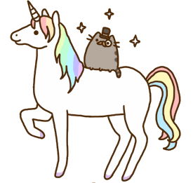

Mr. Pusheen: The Incredible Unicorn Detective
Mr. Pusheen was a cute little cat, and he was quite smart and quite the capable detective. He wore a monocle and everything, and everyone knows monocles improve skills like detecting and deducing and everything else one needs to be a detective. Mr. Pusheen was in posession of all these skills, including the monocle, so when his unicorn friend asked for his assistance in solving a mystery, he was technically prepared.
|
 | |||
| ||||
 |
A bit later
Mx. Unicorn, determined that Mr. Pusheen would use his monocle-powered, super-sleuthing skills to find the missing rainbow, trotted through store looking for donuts. It seemed reasonable, after all, that a cat of Mr. Pusheen's stature would need donuts to fuel an important search such as this one.
|
|||
The donuts sat on the highest shelf in the bakery, gleaming pink with icing and, to Mx. Unicorn's delight, rainbow sprinkles. "There's nothing better than rainbow sprinkles," he thought aloud. Now, from a logistical standpoint, it's not easy for a unicorn to carry anything, because they don't have hands. However, donuts seem particularly suited to carriage-by-unicorns for the obvious reason. They fit in a bag which can be hung by the handles from the unicorn's horn. Don't be unsanitary. After Mx. Unicorn purchased the donuts and returned to the lawn where Mr. Pusheen lay sprawled out on his back with his feet in the air, the equine dropped the pastry-filled bag and nudged it toward the cat. "Here you are, sir, donuts. Now, if you please, I very much need your help to find my missing rainbow." Expending considerable effort, Mr. Pusheen flipped onto his stomach and waddled to the donut bag. He proceeded to eat three donuts and then sat back, swiping a paw over his ear. Mx. Unicorn shifted from hoof to hoof, impatient to begin the search but uwilling to be impolite. Finally, Mr. Pusheen looked up. "Those donuts were very much appreciated, Mx. Unicorn, but you seem impatient. Is there something I can help you with?" Mx. Unicorn blinked, taken aback. But perhaps Mr. Pusheen had not heard his request. "Why, yes, Mr. Pusheen. I require your assistance and your monocle-powered, super-sleuthing skills. You see, my rainbow is missing. I do believe it has been stolen. I need you to help me find it." | ||||
|
Mr. Pusheen flicked his tail. "I can't possibly help you find your rainbow. I've eaten too much sugar. I must nap."
Now Mx. Unicorn was growing quite exasperated. "Is there any solution besides napping, Mr. Pusheen? We really must start searching. If the power of that rainbow fell into the wrong hands . . ." Mr. Pusheen considered this. "I do suppose I could balance the sugary donuts with some salty ramen." He frowned. "But my legs are far too short to go into town for ramen. Napping would be faster." But Mx. Unicorn was already trotting toward town. "I will bring ramen! Just wait here!" xe called over xir shoulder. |
||||
Even later
Ramen is considerably more difficult for a unicorn to carry than a bag of donuts because there is the concern of spilling, especially as the ramen should arrive hot thus the unicorn is required to move along at perhaps a brisker pace than before.
Luckily, our Mx. Unicorn had quite the graceful gallop, and xe arrived back at the lawn with a hot bowl of ramen packed in a to-go container with its shiny metal handle hooked right over xir horn. "I've brought your ramen!" Mx. Unicorn called. | ||||
 |
Mr. Pusheen stretched and padded over, removing the to-go container from Mx. Unicorn's horn as xe bent down. He opened it promptly and began to slurp. Mx. Unicorn flicked xir tail nervously. "Mr. Pusheen, it really is important that we start looking for my rainbow. I'm afraid that it will be dark soon, and you can't even see rainbows in the dark."
Mr. Pusheen finished his noodles and licked his paws of broth. "I can't possibly help you find your raibow. I've eaten too many carbs. I must nap." Mx. Unicorn snorted, pink eyebrows knitting together, but refused to be impolite. "Is there any solution besides napping, Mr. Pusheen? We really must start searching." Mr. Pusheen considered this. "I do suppose I could balance the carbs with some protein-rich sushi. But my legs . . ." |
|||
|
"I'm on it!" Mx. Unicorn galloped away. Even laaaaaaater
It will not do to discuss the manner in which Mx. Unicorn was forced to carry the sushi. When xe returned to the lawn, xe dropped the sushi tray unceremoniously next to Mr. Pusheen's sleeping head.
He blinked his eyes open. "Thank you, friend!" And he began to eat. Mx. Unicorn trotted in anxious circles while Mr. Pusheen ate his sushi. "Mr. Pusheen, we desperately need to find my rainbow. Look, the sun is beginning to set. We won't be able to find it. Do you hear me, Mr. Pusheen?" Mr. Pusheen did not respond, and their one-sided conversation continued like this for some time, until the sun had very nearly set and nearly all the sushi had disappeared from the tray. Mx. Unicorn was positively trembling with hardly-contained impatience by this point in time. "Look! Look at the sun! There's no way we'll find my rainbow now!" Mr. Pusheen stood, stretched, and picked up the last bit of sushi. "Do you know what this is?" Mx. Unicorn scoffed, unable to maintain cordiality any longer. "That is a rainbow roll, Mr. Pusheen. It is hardly my magical rainbow." "I take the magic of sushi very seriously, friend, but I do believe this one tasted extra magical." Mr. Pusheen looked at the roll. "I loathe to waste this delightful sushi roll, however . . ." He tossed the sushi into the air, and in a stream of sparkles, it became a rainbow. Mx. Unicorn pranced around. "You found it. You found it! Thank you! How did you know?" Mr. Pusheen was already walking back to his cushion. "I couldn't possibly explain that. I've eaten far too much. I must nap." |
 |